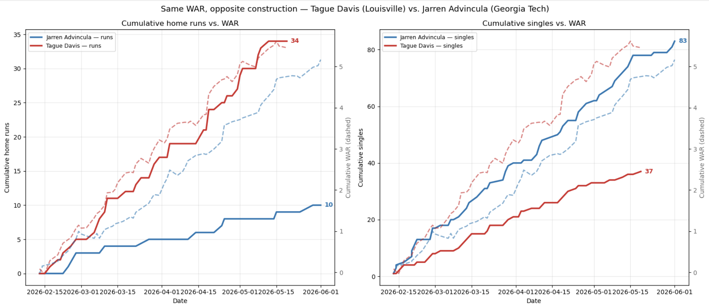
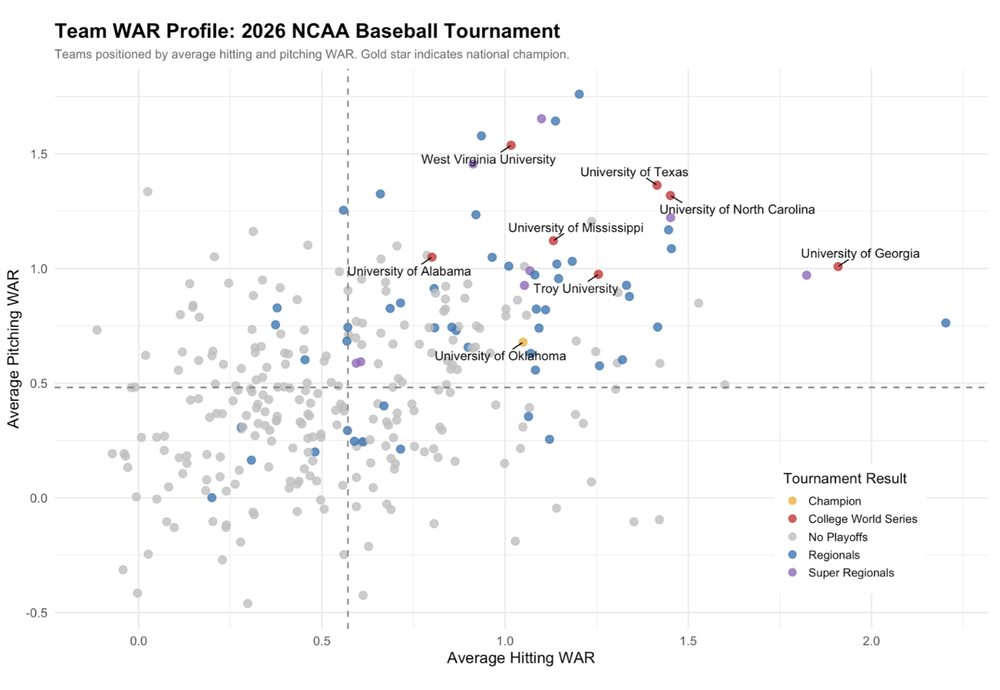

Developing a transparent, conference-adjusted WAR framework for evaluating NCAA Division I baseball players and identifying potential transfer portal targets.
Wins Above Replacement (WAR) is widely used to evaluate player value in professional baseball, but applying it directly to NCAA baseball can produce misleading comparisons. Differences in competition level across Division I conferences make it difficult to compare players using a single, unadjusted metric.
This project developed a transparent, conference-adjusted WAR framework for evaluating NCAA pitchers and hitters. The tool is designed to support player assessment, scouting, performance analysis, and the identification of potential transfer portal targets.
Methodology
Conference-adjusted pitching WAR
We used Fielding Independent Pitching (FIP), a standard pitching metric based exclusively on outcomes most directly controlled by the pitcher: strikeouts, walks, hit-by-pitches, and home runs allowed. FIP was incorporated into a conference-adjusted framework to account for differences in competition level across NCAA Division I conferences, and the resulting adjusted measure was converted into Runs Above Replacement and ultimately pitching WAR. This allowed pitchers from different conferences to be evaluated on a more comparable scale.
Conference-adjusted hitting WAR
For hitters, we used weighted On-Base Average (wOBA) as the foundation of the model. The calculation incorporated conference adjustments and plate appearances to estimate a player's offensive contribution relative to a replacement-level hitter.
Conference adjustments
We created conference tiers to account for differences in competition across Division I baseball. These adjustments provided a more equitable basis for comparing player performance across different schedules.
Team-level analysis
We aggregated player WAR to compare team performance and examined the relationship between team WAR, tournament advancement, and outcomes in the 2026 NCAA Baseball Tournament.
Visualizing the Model

Constructing Hitting WAR:
Comparing the accumulated value of a power hitter and a contact hitter with similar WAR totals.

Team WAR and Tournament Outcomes:
Team WAR was generally associated with stronger tournament performance, although it was not sufficient to predict advancement on its own.
Key Results
The pitching model identified several high-performing players who were selected early in the 2026 MLB Draft, including Jack Radel, selected in the first round, and Mason Edwards and Wes Mendes, selected in the second round.
Among the hitters, Chris Katz, Vahn Lackey, and Daniel Jackson ranked highly in the model and were selected in the 2026 MLB Draft.
The framework allowed pitchers and hitters with different styles—such as power-oriented and contact-oriented hitters—to be compared using a common value metric.
The model provides a data-driven way to compare players across conferences and can help identify promising transfer portal candidates whose performance may be undervalued or difficult to assess using traditional statistics alone.
At the team level, WAR showed a generally positive relationship with tournament performance, but it was not a reliable standalone predictor of advancement.
These results suggest that WAR is valuable for evaluating individual and team performance, but should be interpreted alongside roster construction, coaching, defense, and tournament variance.
Impact
This project demonstrates how a transparent, context-aware WAR model can improve player comparisons in college baseball. By adjusting for conference strength and using player-performance measures such as FIP and wOBA, the framework provides a more useful foundation for evaluating current players, projecting value across levels of competition, and identifying potential transfer portal targets.
The work also highlights an important limitation of analytics: a strong descriptive metric does not automatically become a perfect predictive model. WAR can help explain player and team value, but effective recruiting and roster decisions require combining it with additional performance, scouting, and contextual information.